Projet AAA · chantier T-0086 · 30/09/2026 · brouillon
Présentation investisseurs
Les 17 diapositives du brouillon de présentation, dans l'ordre : ce qui est à l'écran, les images, les notes de l'orateur et les sources. C'est une proposition à valider par le directeur ; le Chef la transformera en présentation. Chaque chiffre a sa source datée ou est annoncé comme une hypothèse ; l'équipe reste à compléter par le directeur.
Titre du jeu : « Le Crépuscule de l'Ombre », titre de travail provisoire (GDD ; bilan de la Mission 5). Moteur : Unreal Engine 5.8, choix définitif du 30/09/2026 (D-181) ; les chiffres suivent la variante Unreal de l'étude T-0077 et du plan T-0090. Texte complet : D:\aaa-game\.equipe\prototype\presentation.md
Nature des images (à garder dans la présentation finale) :Captureimage réelle d'un prototype jouableFiche IAplanche de personnage générée par IAConceptintention d'ambiance, pas une captureBibleplanche de la bible artistique proposéeMaquetteécran d'interface proposé (chantier T-0083, validé)
Diapositive 1 / 17Titre
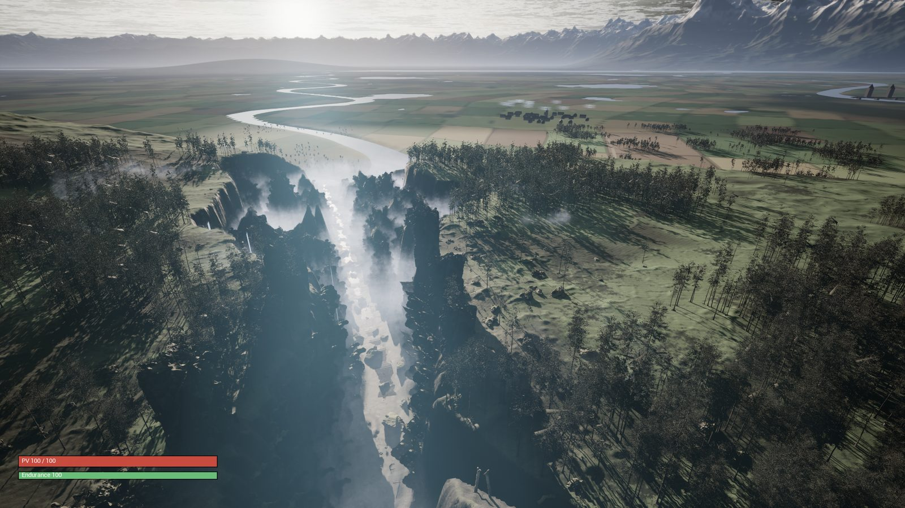
Titre de travail provisoire
Le Crépuscule de l'Ombre
Action-RPG en monde ouvert · dark fantasy · PC d'abord
CapturePrototype Unreal 5.8, belvédère des Gorges des Soupirs (T-0060, 30/09/2026). Ligne du bas de la diapositive : « Brouillon pour les investisseurs · Unreal Engine 5.8 ».
Notes de l'orateur
Ce que vous voyez n'est pas une illustration : c'est une capture de notre prototype jouable, prise le 30 septembre 2026. Le titre est un titre de travail. Le jeu est un action-RPG en monde ouvert, de dark fantasy, qui sortira d'abord sur PC. Je vais vous montrer ce que le jeu promet, ce qui est déjà fait, et ce qu'il faut pour aller au bout du prototype.
Un capitaine trahi et sacrifié se réveille sans mémoire, fusionné de force avec un Ange Déchu qui le ressuscite, le raille et le corrompt ; il mène sa vengeance dans un monde ouvert qui se souvient de chacun de ses actes.
Genre
Action-RPG systémique en monde ouvert, avec de l'infiltration
Ton
Dark fantasy mature, sombre et psychologique, relevée d'humour : l'Ange critique le héros
Public
Joueurs de RPG profonds (Elden Ring, The Witcher 3, Baldur's Gate 3) et de simulations immersives (Dishonored, MGS V)
Plateformes
PC d'abord, manette et clavier-souris à égalité ; consoles envisagées ensuite
Mode
Solo, ou coopération de 2 à 4 joueurs
Fiche IALe héros au réveil, fiche validée (D-163).
Notes de l'orateur
En une phrase : vous êtes un officier trahi, et vous partagez votre corps avec un ange déchu qui a besoin de vous et veut vous posséder. Le public visé, c'est celui d'Elden Ring, de The Witcher 3 et de Baldur's Gate 3. On sort d'abord sur PC, avec la même qualité de jeu à la manette et au clavier ; les consoles viendront ensuite. On joue seul, ou à plusieurs, jusqu'à quatre.
Sources : Pitch § 1, § 2 ; GDD (« Vision du jeu », « Concept principal ») ; D-80, D-107, D-155, D-163.
Diapositive 3 / 17L'histoire
Un héros sans nom, un Ange Déchu
La trahison. Vous étiez capitaine de l'Ordre du Sceptre d'Or. Votre Général vous a vendu à un culte, qui vous a sacrifié dans un rituel.
Le réveil. Au fond des Gorges des Soupirs, vous vous découvrez dans un reflet d'eau : vous choisissez votre visage, votre corps (homme ou femme)… et le seul mot qui vous revient, votre nom.
L'hôte. Malak-Gath, un Ange Déchu millénaire, vit désormais dans votre esprit. Il vous parle, vous critique, vous ressuscite, et libère en vous la magie brute du Vide.
La traque. Votre ancienne armée vous chasse, le culte se déchire à votre sujet, et le Général règne en secret sur un trône vide. Sept quêtes principales mènent jusqu'à lui.
Trois fins : la Rédemption du Soldat, le Pacte d'Ombre, l'Avatar du Néant.
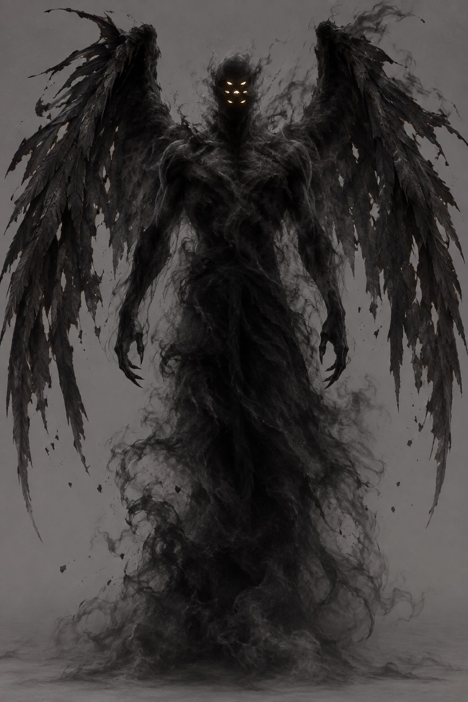
Fiche IAMalak-Gath, l'Ange Déchu, fiche validée.
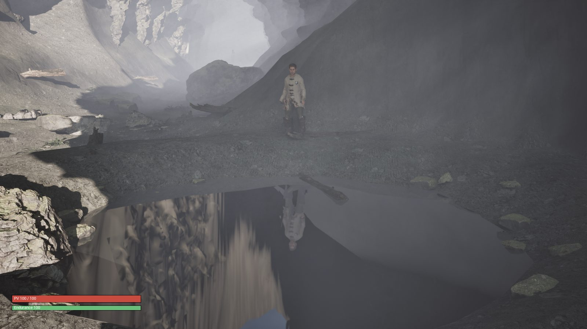
CaptureUnreal 5.8 : le point d'eau du reflet, où le joueur crée son personnage.
Notes de l'orateur
Le héros n'a pas de nom imposé : le joueur le choisit au réveil, devant son reflet, en même temps que son visage. On peut jouer une héroïne. Ce choix n'est pas cosmétique : tout le jeu vous parle à vous.
L'Ange Déchu, Malak-Gath, est le second personnage principal : il a besoin de vous vivant, mais il veut vous posséder entièrement, et il ne se prive pas de commenter vos erreurs. L'histoire est une vengeance contre le Général, qui règne en secret. Il y a trois fins, et c'est votre corruption qui décide si la troisième, la pire, vous tombe dessus.
Sources : GDD (« Synopsis », « Le didacticiel », « Les quêtes principales », « Les trois fins ») ; Pitch § 2 ; D-02, D-03, D-54, D-96, D-107, D-155, D-163.
Diapositive 4 / 17Ce qui le rend unique · 1
Un monde qui se souvient
Les PNJ partagent leur mémoire. Un hameau apprend tout, d'un bloc ; la Capitale est découpée en quartiers qui se renseignent entre eux ; les monstres d'une région s'adaptent à votre style (abusez de l'épée, ils y deviennent résistants).
La mémoire du nom. Au début, on vous appelle « Capitaine » ou « étranger ». Plus vous parlez aux gens, plus ils retiennent le nom que vous avez choisi, et finissent par l'employer.
Le monde change sans vous attendre. Les décrets des Hauts Gradés transforment les régions au fil de la partie et créent de nouvelles quêtes.
« Restez où vous êtes, Capitaine. » — « Non, moi c'est [Nom du héros]. »Le chef du hameau et le héros, premier jet de dialogue (T-0087, provisoire)
Fiche IAVillageois du Hameau de la Brume, proposition (T-0084).
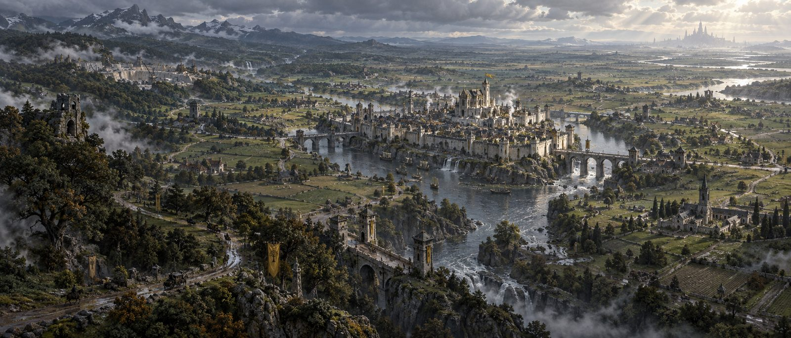
ConceptOakhaven, intention d'ambiance (image 14).
Notes de l'orateur
Dans la plupart des RPG, chaque PNJ est une île. Ici, les habitants d'un lieu partagent ce qu'ils savent : dans le hameau de départ, une rumeur est connue de tous ; dans la Capitale, chaque quartier a sa mémoire et espionne les autres. Et le monde apprend votre nom : les gens vous appellent d'abord par un titre, puis par votre nom, au fil des rencontres.
Faire prononcer à voix haute un nom saisi librement par le joueur est un objectif du projet : une solution technique est à l'étude ; en attendant, le nom s'affiche à l'écrit et les voix utilisent des titres.
À ne pas promettre : que les voix prononcent déjà le nom du joueur (objectif D-170, solution non trouvée ; méthode « nom seul inséré » écartée, D-176).
Sources : Pitch § 3.A ; GDD (« IA des PNJ et des ennemis », « Quêtes secondaires et Quêtes ++ ») ; D-78, D-155, D-170, D-172, D-174, D-176 ; dialogues T-0087 (CHF-01, CHF-02 ; premier jet, validé).
Diapositive 5 / 17Ce qui le rend unique · 2
L'Ange qui ronge
La corruption se mérite. Chaque sort de l'Ange, chaque pacte, chaque mort fait monter la Synchronicité, votre fusion avec lui. Trois stades : une voix, puis des visions, puis l'Ange lui-même, visible de vous seul. Elle peut redescendre : c'est à vous de résister.
Pas de « Game Over ». À votre mort, l'Ange recoud vos chairs au dernier point de repos (auberge ou feu de camp). Mais le temps a passé, les quêtes en cours ont échoué, et votre corps vieillit : de 30 à 50 puis 70 ans d'apparence, jusqu'à 5 cicatrices qui changent le jeu.
L'héritage. Au bout du vieillissement, la mort devient définitive : un héritier, que vous avez formé, reprend la partie dans un monde qui se souvient.
Pas de classe figée, pas de boutons de sorts figés. Les sorts passent par une roue des magies (commandes provisoires, D-67) ; épée et magie se mêlent ; 20 fusions secrètes se découvrent en expérimentant.
« Encore toi… Regarde tes mains, cadavre ambulant. La peau se ride, le sang se glace. »Malak-Gath, à l'oral (DA & Script, scénario A)
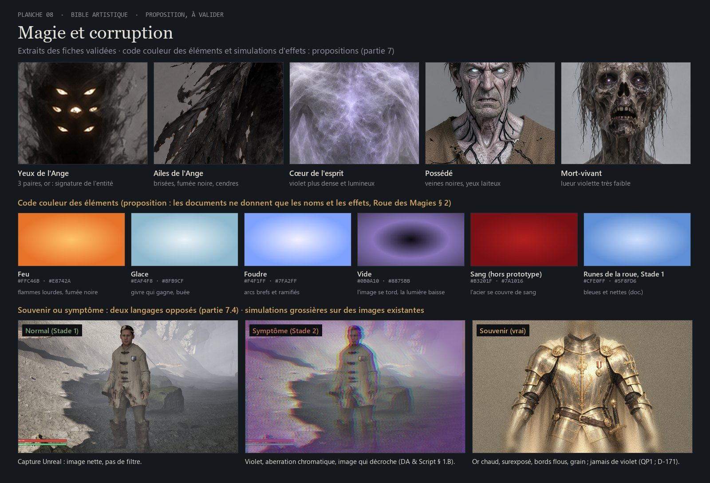
BibleMagie et corruption : code couleur et effets, proposition (T-0088).
Notes de l'orateur
La corruption n'est pas une barre d'histoire qui monte toute seule : c'est le reflet de vos choix. Plus vous utilisez la magie de l'Ange, plus il prend de place : d'abord une voix, ensuite des visions, enfin sa présence physique, que vous êtes seul à voir.
Et la mort a un prix : le monde continue sans vous, vous vieillissez, vous gardez des cicatrices. À la fin, votre héritier prend la relève. C'est ce qui rend chaque partie différente : 8 branches de compétences sur 10 au plus, 3 fins, une vie qui laisse des traces.
À ne pas promettre : l'illusion du Stade 3 (l'Ange visible) dans le prototype : il y montre les Stades 1 et 2 complets et un Stade 3 réduit (roue corrompue, voix plus forte, journal qui tremble), sans illusion ni prise de contrôle (D-182 (4)).
Jusqu'à 4 joueurs, chacun son histoire. Chacun a sa réputation, sa prime, sa carte, son journal et son propre fragment de l'Ange, que lui seul voit et entend.
Le monde vous monte les uns contre les autres. Les PNJ mettent en garde un joueur contre un autre ; des contrats de traque peuvent viser un coéquipier, mort ou vif.
Chacun sa fin. Même scène finale, mais chaque joueur vit la fin que dictent sa propre corruption et ses choix.
Le prototype est en solo (D-177) : la coopération sera présentée à part (vidéo ou maquette).
« Dis-moi, Capitaine… Tu as vu comment ton cher camarade regarde la garde royale ? »Malak-Gath, à l'oreille du seul joueur 1 (DA & Script, scénario C)
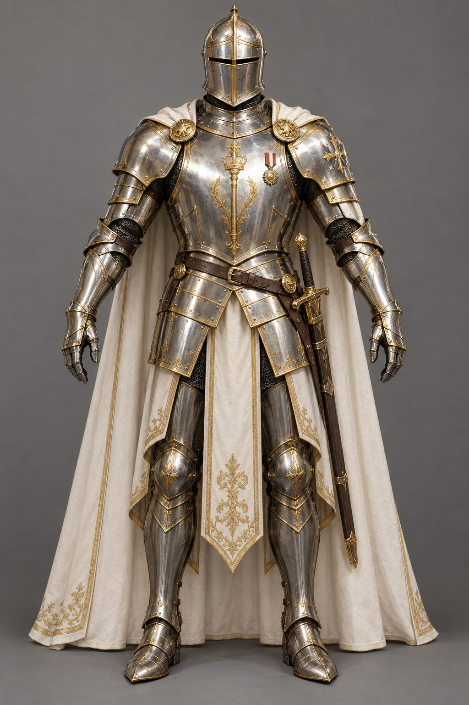
Fiche IALe héros en officier, tel qu'il était avant la trahison (couleurs de l'Ordre, D-166).
Notes de l'orateur
En coopération, on ne tape pas seulement des monstres ensemble. Chaque joueur est un capitaine de la même unité sacrifiée, avec son propre fragment de l'Ange. Le monde suit chacun séparément : si l'un s'allie au culte et l'autre reste loyal, les PNJ le remarquent, et l'Ange de l'un peut souffler au joueur que son ami le trahit. On peut collaborer, jouer double jeu, ou se trahir pour une prime. Le prototype que nous finançons est en solo : la coopération sera montrée à part.
Point à valider : le Pitch dit « coopération asynchrone » ; un investisseur peut comprendre « pas en même temps », alors que le GDD décrit des joueurs qui jouent ensemble (ni pause ni ralenti en coop), suivis séparément. Formulation proposée : « coopération où chacun garde son histoire ».
Le roi est mort ou disparu ; le Général gouverne en secret, au nom d'un roi que le peuple croit vivant.
Cinq grandes zones sur un monde de 50 km de rayon : au sud la Plaine Royale (zone de départ, Oakhaven) ; à l'est la Forêt Sauvage ; à l'ouest les Canyons de la Brume ; au nord les Pics Célestes ; au centre la Capitale Éternelle (plus de 10 000 habitants, 7 quartiers et un Château).
Huit factions, dont cinq majeures (l'Ordre, le Conclave, la Coalition, le Culte, le Cartel), chacune avec sa réputation, ses rivales et sa déchéance possible.
Des extensions prévues au-delà du fleuve infranchissable du Sud.
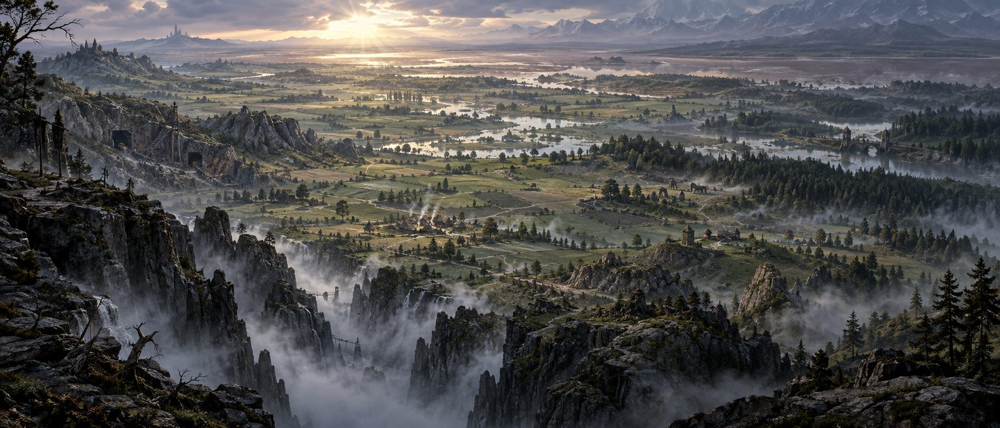
ConceptZone de départ, Plaine Royale (image 13, référence du prototype, D-158).
ConceptOakhaven, au nord de la Plaine Royale (image 14).
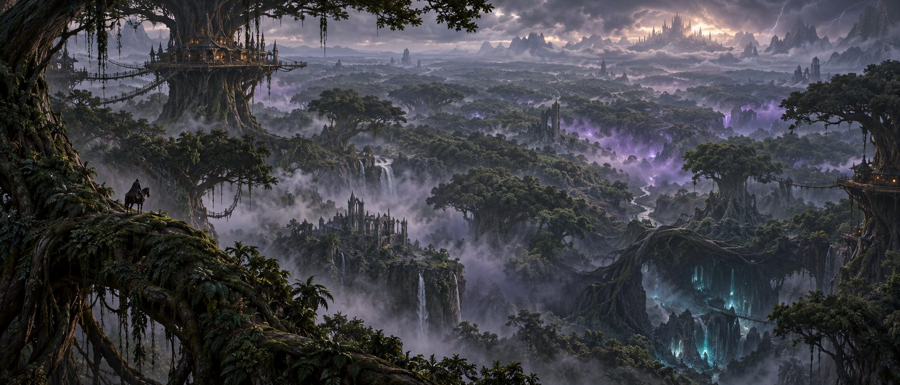
ConceptForêt Sauvage, à l'est (image 12).
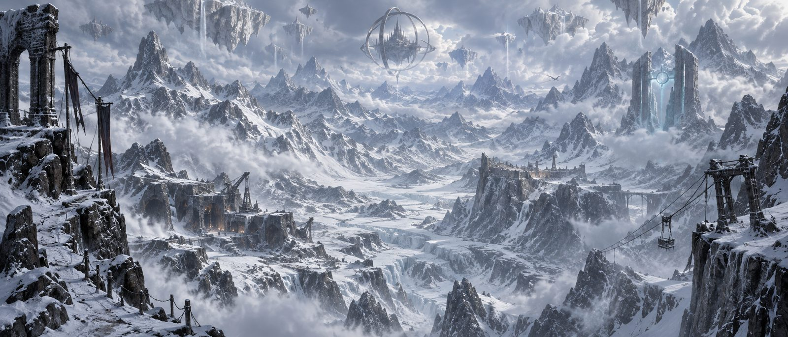
ConceptPics Célestes, au nord (image 15).
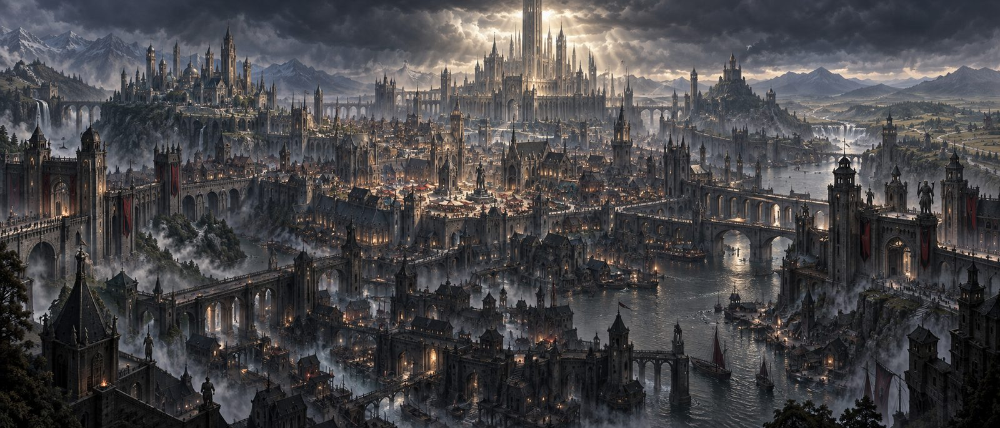
ConceptCapitale Éternelle, au centre (image 16).
Notes de l'orateur
Le monde est un royaume en crise : le trône est vide et le Général le cache. Il fait environ 100 km d'un bord à l'autre, avec cinq grandes zones très différentes, de la plaine au sud jusqu'aux montagnes du nord, et une capitale immense au centre. Huit factions se disputent le pouvoir, et chacune peut s'effondrer à cause de vous. Ces images sont des intentions d'ambiance : elles fixent le ton, pas la carte.
Précaution : l'origine et les droits d'usage des images de concept ne sont écrits nulle part dans le projet : à confirmer par le directeur avant toute diffusion hors de l'équipe. Les images 17 et 18 (désert de dunes, contraire à D-134) sont écartées.
Prologue court (environ une minute), puis le didacticiel : réveil, reflet (visage, corps, nom), combat, apparition de l'Ange face à une horde, escalade de la falaise, panorama sur la Plaine Royale.
La zone de départ : le Hameau de la Brume et ses PNJ, le nid à nettoyer, le Pont des Déserteurs (tuer ou empoisonner : le premier choix qui compte), la route.
La première quête principale : les portes et la grand-place d'Oakhaven, trois façons d'entrer (voies B et C : à trancher, PB-11), la rencontre du Général.
Une quête annexe, « L'Agneau et le Loup » (tuer ou apprivoiser un loup) ; une quête de métier, celle du forgeron (mines, minage, forge).
Un morceau de nature libre avec bêtes, monstres et PNJ, la Ferme des Veilleurs, et toute l'interface de ce périmètre.
La magie du prototype (D-182) : au didacticiel, un pouvoir démesuré guidé par l'entité ; au nid, un seul élément, Feu ou Glace, que le joueur choisit par un dialogue avec l'entité (les autres quadrants de la roue restent scellés) ; corruption : Stades 1 et 2 complets, Stade 3 réduit.
13PNJ qui parlent (fiches T-0084)
375 à 1 010répliques (hypothèse de l'inventaire)
15-20 mindémo 1, puis 45 à 60 min pour la démo 2 (proposition du plan)
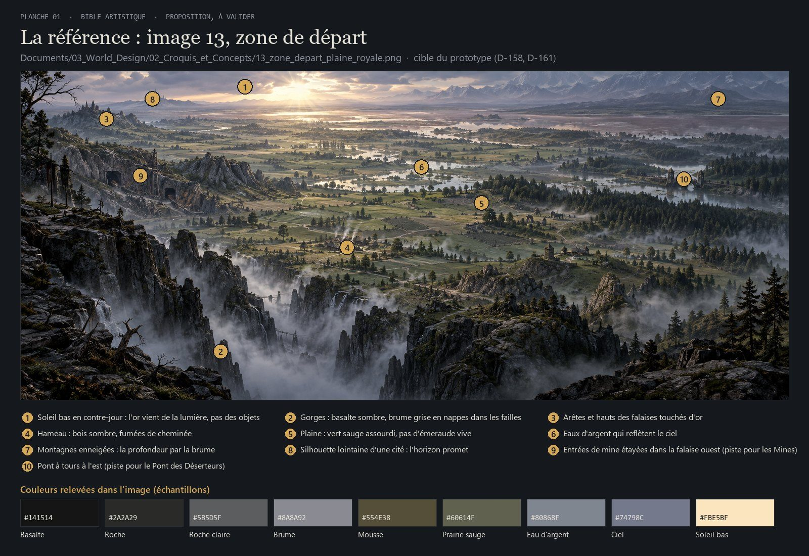
BibleLa zone de départ : l'image de concept 13 annotée, référence du prototype (T-0088).
Toute l'interface : premières maquettes
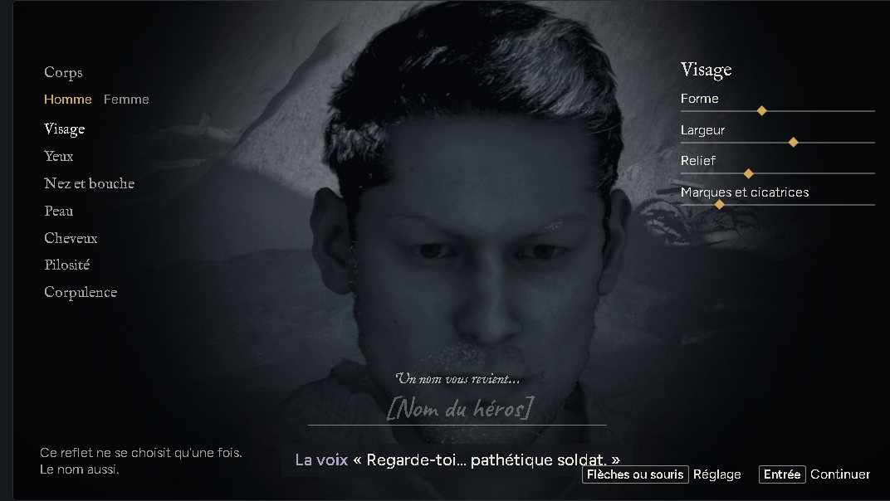
MaquetteLe reflet : visage, corps et nom (E1).
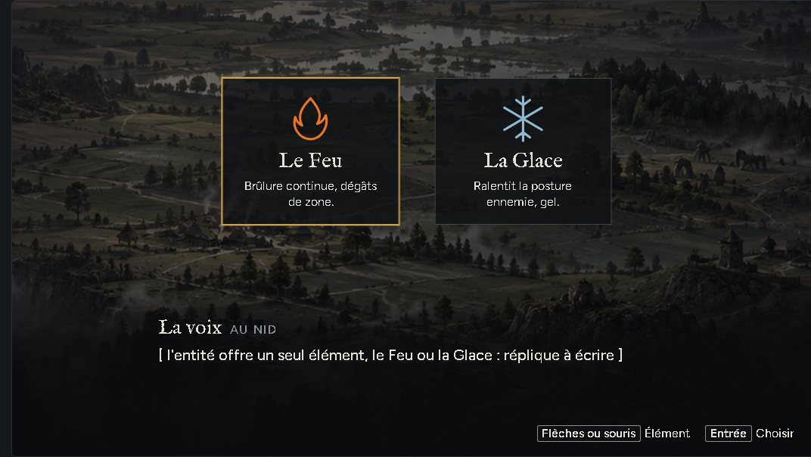
MaquetteLe choix de l'élément : l'entité offre le Feu ou la Glace (E2 bis, D-182).
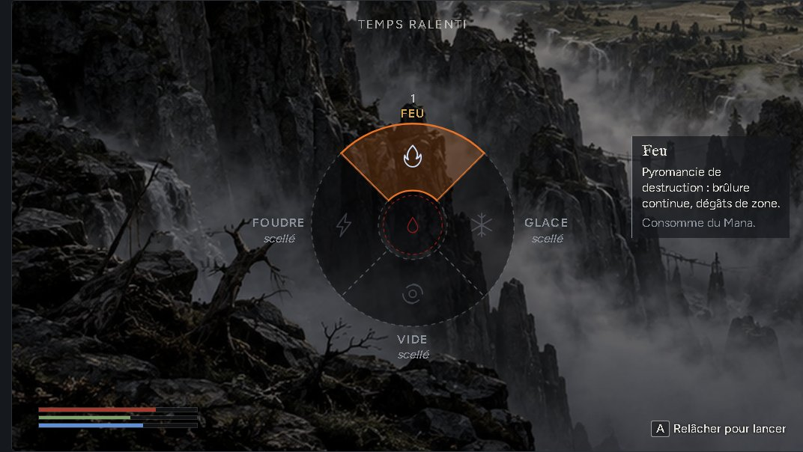
MaquetteLa roue des magies dans le prototype, Feu choisi : les autres quadrants restent scellés (E2, D-182).
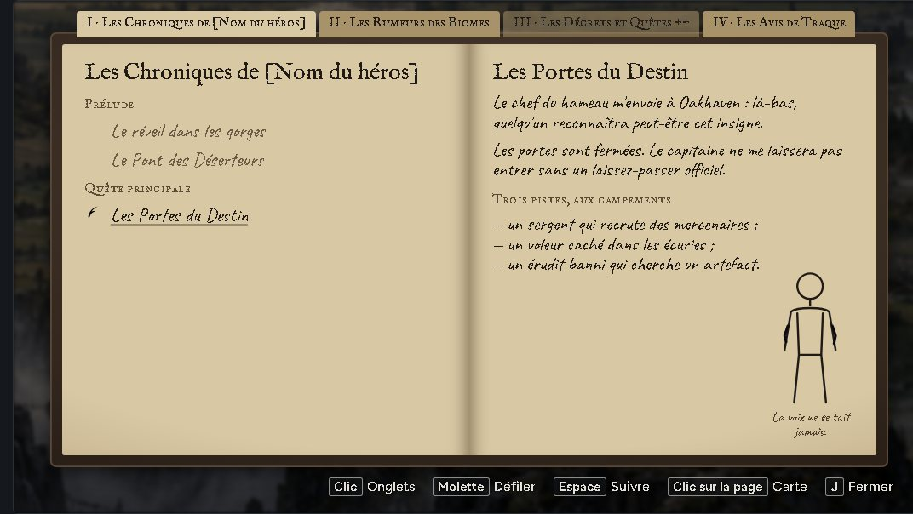
MaquetteLe journal, « Les Chroniques de [Nom du héros] » (E3).
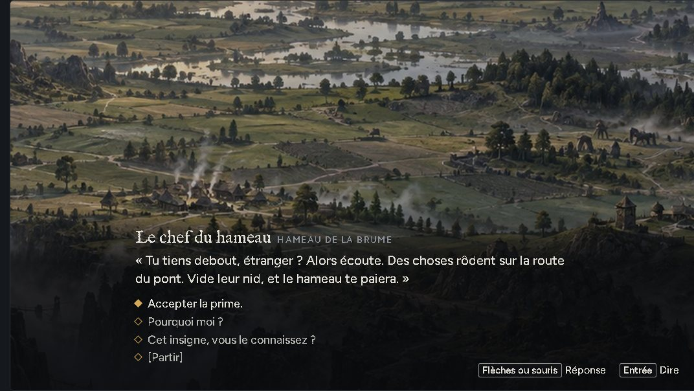
MaquetteDialogue et choix (E11).
Notes de l'orateur
Les éditeurs et les fonds ne regardent plus guère les dossiers papier : ils veulent jouer. Notre prototype est donc un vrai morceau du jeu, pas une vitrine technique : du réveil jusqu'à la première quête principale, avec une quête annexe et une quête de métier, et toute l'interface qui va avec. On le joue en solo ; la coopération sera montrée à part. Ce qui n'y est pas : les boss mineurs de la plaine, la météo, la coopération.
Les cinq écrans du bas sont des maquettes : elles fixent la disposition, les textes et les commandes, avant la fabrication dans le moteur. Au nid, l'entité offre au joueur un seul élément, le Feu ou la Glace ; sa roue n'ouvre alors que celui-là.
Sources : D-159, D-175, D-177, D-182 ; inventaire T-0077 § 1, § 2, § 3, § 4.6 ; fiches T-0084 § 1 ; points bloquants T-0085 (PB-11, voies B et C) ; plan T-0090 § 3 ; étude T-0077 [S-50, S-52] ; maquettes T-0083 (validées : E1, E3, E11 capturés le 30/09/2026 vers 20:55 ; E2 et E2 bis vers 21:58, après D-182).
Diapositive 9 / 17Déjà fait · 1
Une mini-tranche jouable, un moteur choisi sur pièces
Une mini-tranche jouable dans Unreal Engine 5.8 : les Gorges des Soupirs, le héros, un combat contre 2 morts-vivants et 1 esprit (épée, esquive, parade, verrouillage, Endurance).
Un moteur choisi sur pièces : la même mini-tranche a aussi été faite dans Unity 6.5 ; après avoir joué aux deux, le directeur a retenu Unreal 5.8 pour son rendu (D-181). C'est le moteur le plus utilisé (42 %) et le plus courant dans les jeux AA et AAA (GDC 2026).
Début de la production : le premier PNJ MetaHuman, le forgeron du hameau, a été créé par script le 30/09/2026 ; sa voix, son inventaire et la première version empaquetée suivent.
≈ 8 h 30d'agent pour le décor photoréaliste : ≈ 0,65 km², ≈ 7 500 sapins (M-1)
≈ 2 h 10pour un héros MetaHuman jouable et retouché (M-2)
≈ 50 minpour le combat complet : règles, IA, affichage, 22 tests automatiques (M-3)
133 img/spendant le combat, 1920 × 1080, sur le poste de développement
CaptureParade parfaite pendant le combat.
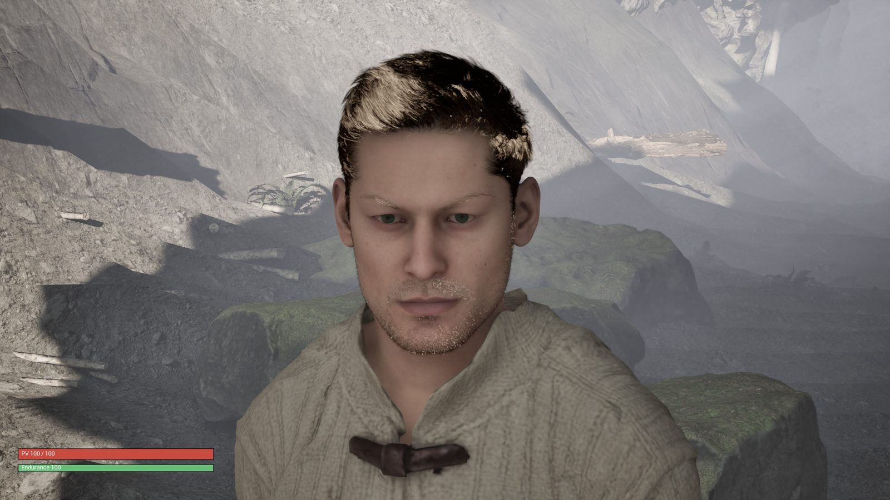
CaptureLe héros MetaHuman.
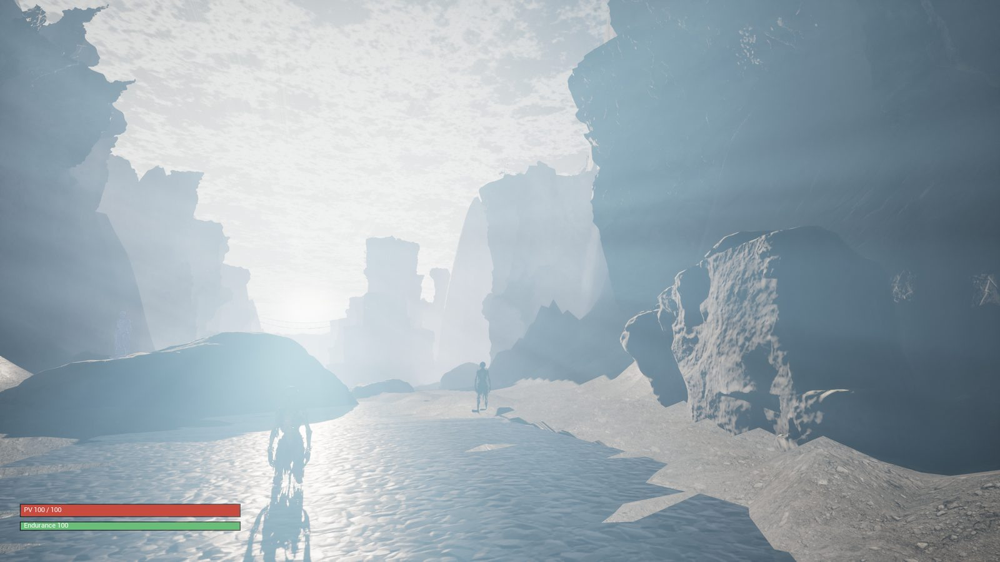
CaptureLes parois des Gorges.
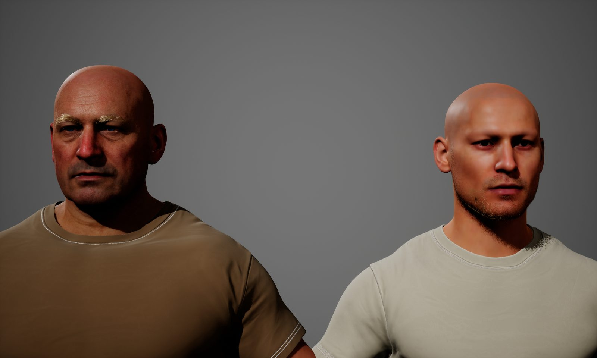
CaptureLe forgeron (à gauche) et le héros : deux MetaHumans différents. Travail en cours du 30/09 (20:52) : cheveux, barbe et tenue pas encore rendus ; à remplacer par le forgeron habillé qui parle.
Notes de l'orateur
Ceci est déjà jouable. Les temps affichés sont des temps mesurés de travail d'agent : un décor photoréaliste en une journée de travail, un combat complet avec ses tests en moins d'une heure. Ce sont ces mesures qui fondent notre estimation.
Pour choisir le moteur, nous avons fait la même mini-tranche dans Unreal et dans Unity, puis le directeur a joué aux deux. Il a retenu Unreal pour la qualité de son rendu ; l'étude de coût, qui trouvait les deux moteurs à égalité sur le prix du prototype, recommandait aussi Unreal. La production a commencé : voici le forgeron, notre premier personnage secondaire, créé par script ; il n'est pas encore habillé.
Les images par seconde sont mesurées sur notre poste, avec une carte graphique récente : il faudra les vérifier sur une machine moyenne avant la démo.
Sources : D-159, D-162, D-164, D-165, D-169, D-175, D-178, D-179, D-181 ; étude T-0077 § 1.2 (M-1 à M-3) et partie 5 ; [S-48] (GDC 2026 : Unreal 42 %, Unity 30 %) ; 133 images/s : Unreal, série T-0060, seul sur la carte graphique, rendu hors écran, RTX 5070 Ti (unity\MESURES.md § 5 ; unreal-v2\MESURES.md) ; forgeron : essai T-0081 en cours, unreal-v2\captures\forgeron\ (bilan_forgeron.json).
Diapositive 10 / 17Déjà fait · 2
L'univers visuel et les personnages
Une bible artistique (proposition) : photoréalisme sombre, un monde sourd aux accents rares (l'or pour le pouvoir, le violet pour le Vide, le rouge pour le sang), palettes par lieu, lumière, matières, silhouettes.
13 personnages qui parlent dans le prototype, chacun avec sa fiche (rôle, voix, visage), à fabriquer en MetaHuman, chacun différent.
Des modèles 3D générés en local à partir des fiches pour les créatures et les tenues, puis intégrés au moteur (diapositive 12).
Travaux de la nuit : maquettes cliquables de l'interface, premier jet des dialogues du hameau, bibliothèque de 236 sons libres de droits, plan de production en 98 tickets, dossier de 34 points de design, dont 4 déjà tranchés (D-182).
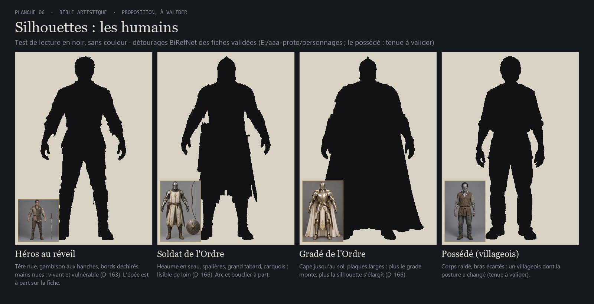
BibleSilhouettes des humains : chaque rôle se lit à sa forme (T-0088).
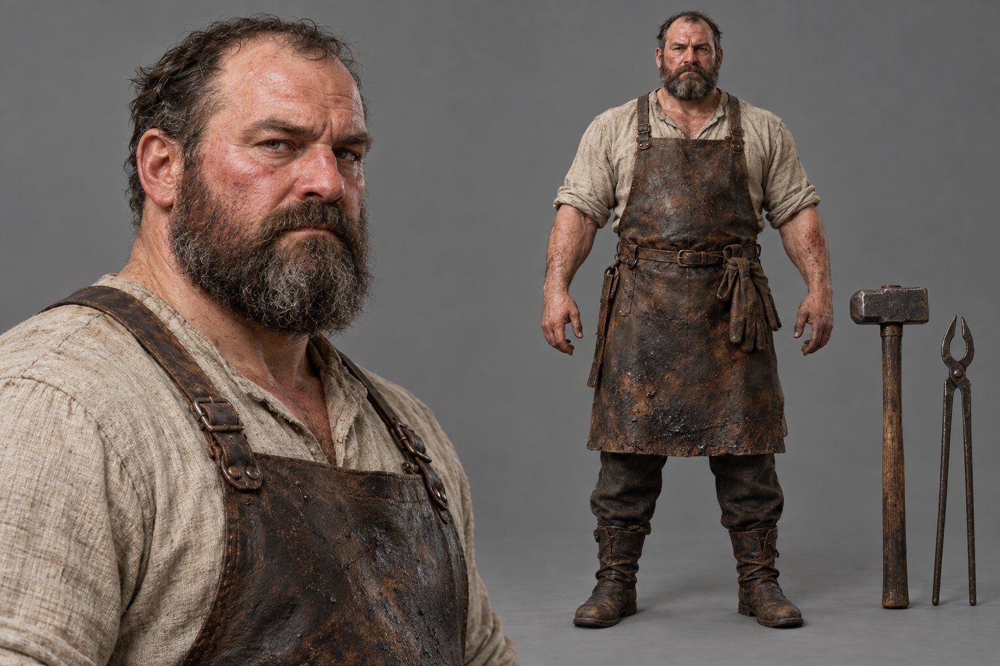
Fiche IALe forgeron du hameau.
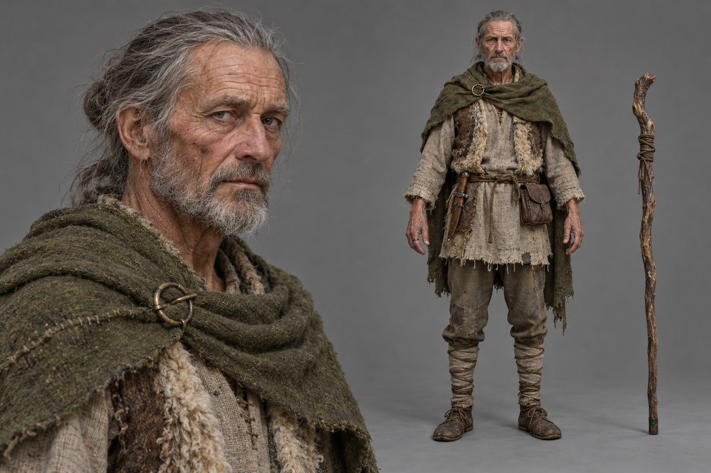
Fiche IALe chef du Hameau de la Brume.
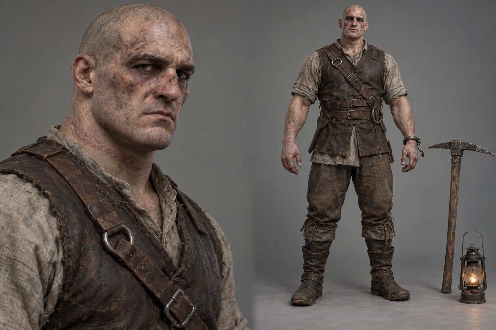
Fiche IABrutus le Brisé, Maître du Minage.
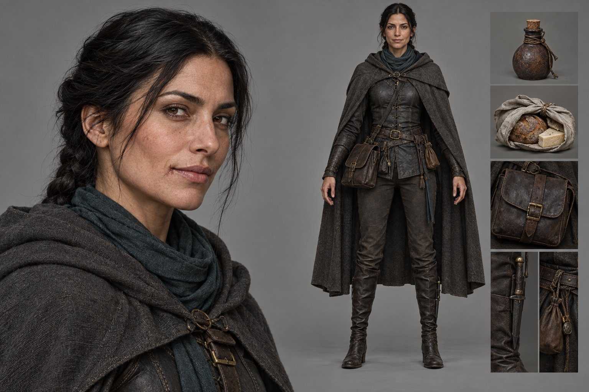
Fiche IAL'agente du Cartel de la Brume.
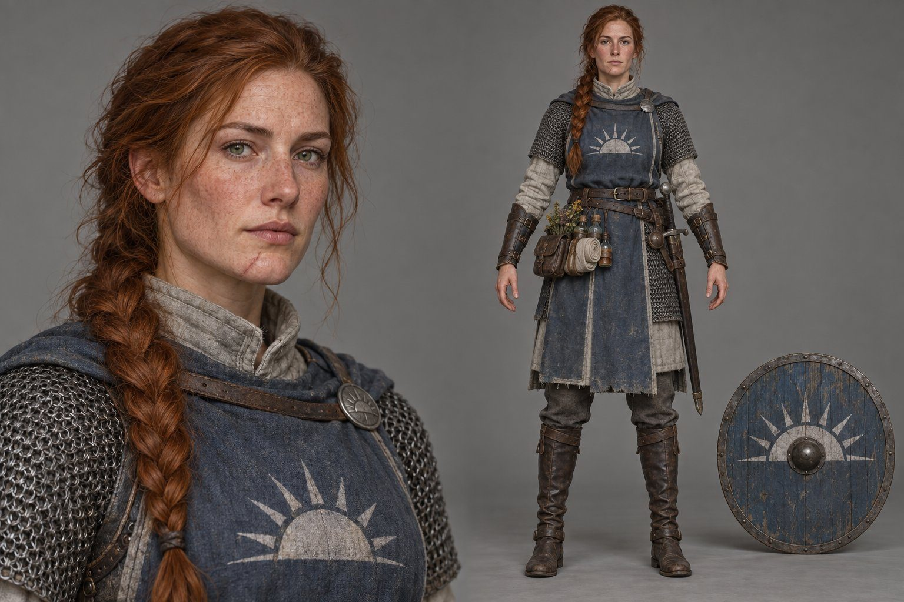
Fiche IALa Veilleuse de l'Aube.
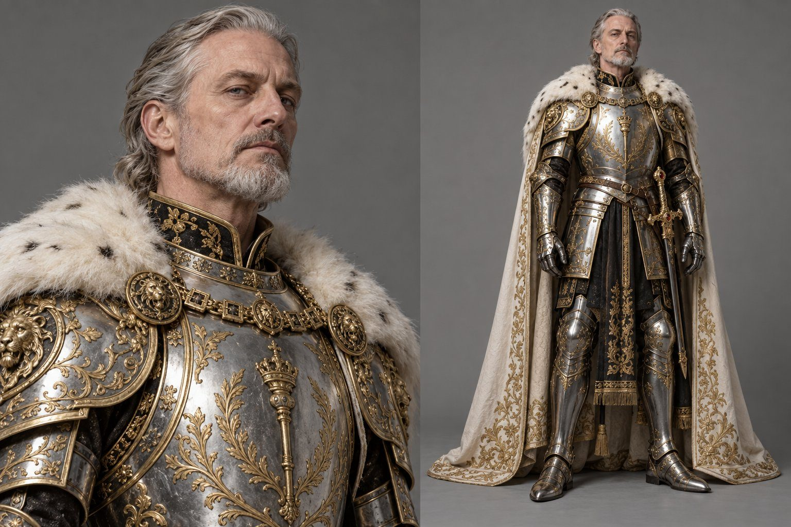
Fiche IALe Général.
Notes de l'orateur
Nous ne partons pas d'une page blanche. La direction visuelle est écrite, avec des règles simples : un monde sourd, où la couleur a un sens. Les personnages du prototype ont chacun une fiche : le forgeron, le chef du hameau, Brutus le Maître du Minage, l'agente du Cartel, la Veilleuse, le Général… Ces planches sont générées par IA et servent de référence aux modèles 3D. Tout cela reste à valider par le directeur, et la direction artistique est l'un des postes où nous voulons un professionnel humain.
201,6 Md$recettes mondiales du jeu vidéo en 2025, première année au-dessus de 200 Md$ (Newzoo) [P-1]
+12 %croissance du PC sur un an, la plus forte des plateformes [P-1]
> 19 000jeux sortis sur Steam en 2025 : se faire voir est le premier défi [P-8]
Jeu (sortie)
Ventes annoncées
Source et date
The Witcher 3 (2015)
plus de 60 millions
CD Projekt, 28/05/2025 [P-2]
Elden Ring (2022)
30 millions
Bandai Namco, relayé le 28/04/2025 [P-3]
Baldur's Gate 3 (2023)
plus de 20 millions
Larian (à Bloomberg), relayé le 16/12/2025 [P-4]
Clair Obscur : Expedition 33 (2025)
plus de 8 millions
Kepler et Sandfall, hors Game Pass, relayé le 24/04/2026 [P-5]
Kingdom Come : Deliverance II (2025)
plus de 6 millions
Warhorse et Deep Silver, relayé le 25/06/2026 [P-7]
Un repère de coût :Clair Obscur a coûté moins de 10 millions de dollars, selon son directeur ; une partie du travail (animations de combat, localisation) a été confiée à des prestataires [P-6]. Ce ne sont pas des prévisions : succès exceptionnels, choisis pour leur genre et leur public (HP-3).
Notes de l'orateur
Le marché dépasse 200 milliards de dollars et c'est le PC qui progresse le plus : c'est notre plateforme de sortie. Les trois premiers jeux du tableau sont ceux que cite notre pitch pour décrire notre public : ils montrent que ce public existe et qu'il est immense. Les deux suivants, sortis en 2025, montrent que des studios bien plus petits que les géants peuvent réussir sur ce créneau, avec des budgets maîtrisés.
Attention : ce sont des succès exceptionnels, choisis pour leur genre ; ce n'est pas une prévision de nos ventes. Et la concurrence est forte : près de vingt mille jeux par an sur Steam.
À ne pas dire : « nous vendrons X millions ». Les scénarios de recettes de l'étude T-0077 (2,5 à 25 M$) servent à calculer les licences (H-2 à H-5) ; ce ne sont pas des objectifs.
Sources : P-1 à P-8, en bas de page ; Pitch § 1 (public cible).
Diapositive 12 / 17Méthode
Agents IA et freelances
Une équipe d'agents IA (Claude) organisée comme un studio : un chef qui écrit des tickets, des exécutants qui les réalisent, un vérificateur qui relit chaque livrable avant qu'il soit accepté ; tout est tracé (tickets, registre des décisions, mesures).
Des temps mesurés, pas supposés : décor 0,65 km² ≈ 8 h 30 ; héros MetaHuman ≈ 2 h 10 ; combat complet ≈ 50 min ; un modèle 3D généré, riggé et importé en ≈ 15 à 50 min ; corrections après relecture : 15 à 27 % du temps.
Une chaîne d'assets locale : fiche dessinée par IA → modèle 3D généré sur le poste → moteur ; licences commerciales, provenance notée pour chaque asset.
Des freelances là où les agents sont faibles (proposition) : direction artistique, animation (escalade, bêtes, visages), doublage.
Transparence : le contenu généré par IA sera déclaré (obligation de Steam, règlement européen sur l'IA).
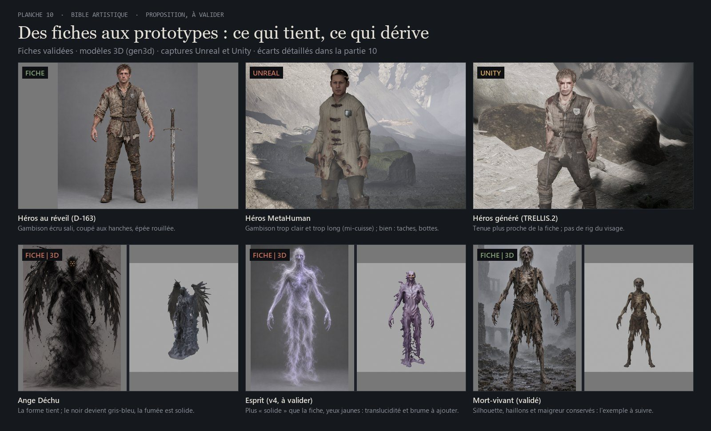
BibleDes fiches aux prototypes : ce qui tient, ce qui dérive (T-0088).
Notes de l'orateur
Notre façon de produire est inhabituelle : le travail de fabrication est fait par des agents d'IA, organisés comme une équipe, avec un vérificateur qui relit tout. Nous avons mesuré leurs temps sur la mini-tranche, et c'est sur ces mesures que reposent le calendrier et le budget.
Leurs limites sont connues : l'animation, la direction artistique et le jeu d'acteur restent des métiers humains, c'est là que nous voulons des freelances. Et nous serons transparents : Steam exige de déclarer le contenu généré, et l'Europe impose de signaler les voix générées.
Pour la question « et les artistes ? » : 52 % des développeurs interrogés par la GDC 2026 ont une vue négative de l'IA générative [étude T-0077, S-48].
Semaines comptées depuis le choix du moteur (S0 : Unreal 5.8, 30/09/2026, D-181), au débit probable de 50 h de travail d'agent par semaine. Les mois sont indicatifs (HP-5 : production lancée le 01/10/2026, sans interruption).
Durée probable du jalonSemaines depuis le choix du moteur
0 · PréalablesS0,5 · début oct. 2026
1 · Monde et hérosS5,3 · début nov. · Démo 1
2 · Hameau et PNJS7,7 · fin nov.
3 · Nid et pontS9,5 · début déc. · Démo 2
4 · Quête annexe et métierS11,8 · fin déc.
5 · QP1 (Oakhaven)S13,9 · début janv. 2027
6 · InterfaceS14,8 · mi-janv.
7 · Polissage et démoS15,4 · mi-janv. · Final
S0S4S8S12S16
Jalon
Contenu
Fin
Mois indicatif (HP-5)
Sortie
0
Préalables : plan recalculé, plans de la zone et d'Oakhaven
S0,5
début octobre 2026
Plan validé
1
Monde et héros : le didacticiel complet
S5,3
début novembre 2026
Démo 1 « Le Réveil » (15 à 20 min)
2
Le Hameau de la Brume et ses PNJ
S7,7
fin novembre 2026
Hameau vivant
3
Le nid et le Pont des Déserteurs
S9,5
début décembre 2026
Démo 2 « La zone de départ » (45 à 60 min)
4
Quête annexe et quête du forgeron
S11,8
fin décembre 2026
Quêtes du hameau jouables
5
Première quête principale (Oakhaven)
S13,9
début janvier 2027
Contenu complet
6
Interface complète
S14,8
mi-janvier 2027
Interface complète
7
Polissage et démo guidée
S15,4
mi-janvier 2027
Prototype final
Fourchette : de 7 à 30 semaines selon la vitesse réelle (HP-5 : de fin novembre 2026 à fin avril 2027) ; avec un quota serré (30 h d'agent par semaine) : ≈ 25 semaines (fin mars 2027).
En parallèle des premières semaines : 1 à 3 semaines de décisions de design du directeur (séances à la fin des semaines 1, 2 et 3).
Notes de l'orateur
Le prototype complet demande un peu moins de 16 semaines de production : s'il démarre maintenant, vers la mi-janvier 2027. Mais on aura quelque chose à montrer bien avant : la première démo, le réveil et le didacticiel, vers la cinquième semaine, donc début novembre ; la deuxième, toute la zone de départ, vers la dixième, début décembre. La fourchette est large parce que le rythme des agents dépend de leur quota d'utilisation, déjà atteint une fois : c'est notre premier risque de calendrier.
Sources : plan T-0090 § 2, § 3, § 4.1 (variante Unreal, D-181 ; simulation ticket par ticket, 98 tickets, un seul agent à la fois dans le moteur, D-168) ; étude T-0077 H-10, H-12. Le plan compte ≈ 6 % d'heures de plus que l'étude (751 h contre 705 h). Mois : 01/10/2026 + semaines × 7 jours, arrondis au demi-mois (HP-5).
Diapositive 14 / 17Budget
Budget du prototype
Deux façons de faire, dans Unreal 5.8 : montant probable, puis bas et haut ; euros hors TVA.
Du bas au haut de la fourchetteMontant probableHypothèse (sans source)
A · agents seuls≈ 840 € (0 à 2 950)
B · agents + freelances≈ 38 300 € (12 500 à 78 500)
B. Agents + freelances (direction artistique, animation, doublage, interface)
≈ 38 300 € (12 500 à 78 500)
≈ 76 jours (36 à 151)
≈ 12 semaines (6 à 24)
Repère : équipe humaine sans agents (hypothèse : 5 à 8 personnes, 4 à 8 mois)
≈ 90 000 à 350 000 €
—
4 à 8 mois
Ce qui ne coûte rien de plus : le moteur (Unreal ne coûte rien avant 1 M$ de recettes du jeu ; une levée de fonds n'y change rien), l'abonnement des agents (déjà payé), les voix de synthèse.
Après la sortie : Unreal prend 5 % des recettes au-delà de 1 M$ ; rien à payer si le jeu ne se vend pas.
Notes de l'orateur
Le prototype lui-même coûte peu en argent, parce que le travail est fait par des agents déjà payés : moins de 1 000 € si les agents font tout. Avec des freelances pour ce que les agents font mal, compter environ 38 000 €, entre 12 500 € et 78 500 € selon les tarifs et le temps réel.
Pour situer : le même prototype fait par une équipe humaine classique coûterait, selon notre hypothèse, entre 90 000 € et 350 000 €. Ce repère n'est pas une source : c'est un calcul sur des salaires moyens du secteur.
Sources : étude T-0077 § 3.1 (scénario A), § 3.2 (tarifs : Malt, grille Equity des jeux AAA… [S-41, S-45, S-46]), § 3.3 (H-19, salaires SNJV 2024), § 2.1, § 2.2 (jours et semaines, H-8, H-10, H-13, H-14 ; l'étude compte ≈ 14 semaines, le plan de la diapositive 13 ≈ 15,4), § 4.2 et [S-2, S-3] (redevance d'Unreal) ; 1 € = 1,1355 $ (BCE, 30/09/2026).
Diapositive 15 / 17Besoins
Besoins et usage des fonds (hypothèses)
Tout ce qui suit est une hypothèse de travail, à arrêter par le directeur. Aucun montant de levée n'est fixé.
Palier 1 — finir le prototype (HP-2 : premier usage des fonds)
Poste (scénario B)
Probable
Fourchette
Base
Doublage (15 à 20 voix, comédiens, studio, droits)
16 000 €
5 000 à 35 000 €
H-18 ; grille Equity (jeux AAA)
Animation (escalade, bêtes, visages)
9 000 €
3 500 à 16 500 €
H-14 ; tarifs d'artistes 3D
Direction artistique
7 500 €
4 000 à 15 000 €
H-14 ; Malt
Artiste d'interface (facultatif)
5 000 €
0 à 9 000 €
H-14 ; source commerciale
Outils, plugins, génération 3D, sons, matériel
840 €
0 à 2 950 €
étude § 3.1
Total
≈ 38 300 €
12 500 à 78 500 €
Non chiffré : une réserve pour imprévus (à fixer par le directeur, HP-4).
Palier 2 — le jeu complet : pas encore chiffré
Aucune étude ne l'estime à ce jour ; le prototype sert justement à mesurer ce que coûte chaque morceau du jeu (HP-2). Ce qu'on sait déjà :
Licence du moteur : Unreal prend 5 % des recettes brutes au-delà de 1 M$ (3,5 % avec une sortie simultanée sur l'Epic Games Store, dont les ventes sont exemptées) ; rien à payer si le jeu ne se vend pas.
Consoles (après le PC) : outils d'Unreal sans surcoût ; kits et certification à la charge du studio ; un portage par un prestataire coûte de 15 000 $ à plus de 300 000 $ selon la taille.
Repère extérieur, pas une cible :Clair Obscur a coûté moins de 10 M$ [P-6].
Notes de l'orateur
Nous ne vous présentons pas encore le budget du jeu complet, et c'est volontaire : nous préférons le calculer sur des mesures réelles plutôt que de l'inventer. Ce que nous demandons d'abord, c'est de quoi finir le prototype dans de bonnes conditions, avec des professionnels pour l'image, l'animation et les voix. Le budget du jeu complet viendra avec le prototype, poste par poste, comme celui-ci.
À compléter par le directeur : le montant demandé, le calendrier de la levée (avant ou après le prototype : étude T-0077, partie 7, point 7), la part éventuelle de pré-production du jeu complet.
Rappel [S-50] : les investisseurs relèvent l'oubli des frais de plateforme, de la TVA et du change ; ici tout est hors TVA, et les frais de plateforme ne concernent que les ventes futures.
Le rythme des agents : leur quota hebdomadaire a déjà été atteint (30/09/2026)
Semaines planifiées, chemin critique d'abord ; freelances pour décharger les agents
Des points de design encore ouverts (apparition de l'Ange, Oakhaven, voies B et C de la QP1…)
Dossier de 34 points avec options et recommandation, dont 4 déjà tranchés (la magie, D-182) ; séances de décision dans les 3 premières semaines
Interface et dialogues jamais essayés dans le moteur
Premiers tickets de la production : un écran d'inventaire complet et le forgeron qui parle (partie Unreal de l'essai, D-181)
Les pièges connus d'Unreal : fichiers binaires, plantages de l'éditeur sans interface, version empaquetée jamais faite, saccades sur PC
Scripts relançables sans risque, tests qui lisent le journal ; version empaquetée chaque nuit dès le premier ticket ; mesure sur une machine moyenne avant la démo
Contenu généré par IA : droits, étiquetage, image auprès des joueurs
Licences commerciales, provenance notée par asset, déclaration Steam, freelances humains pour la direction artistique et les voix
La voix qui dit votre nom n'a pas encore de solution
À l'oral, titres et surnoms en attendant ; le nom s'affiche à l'écrit (D-155, D-170)
Notes de l'orateur
Voici ce qui peut nous ralentir, et ce que nous faisons pour chaque point. Le premier risque n'est pas technique : c'est le temps d'agent disponible chaque semaine. Le deuxième, ce sont des décisions de design encore ouvertes : elles sont listées, avec des options, et se tranchent au début de la production. Les premiers tickets s'attaquent justement à ce que nous n'avons jamais fait : un personnage qui parle, un écran d'interface, une version empaquetée du jeu.
Pour les questions : risque juridique connu pour plus tard (mécanique du loup trahi, à faire valider par un conseil en brevets avant toute sortie aux États-Unis, D-145) ; dépendance à la connexion MetaHuman du compte Epic du directeur (autorisée pour les PNJ humains, D-162, D-179).
Production : agents IA (chef, exécutants, vérificateur, gardien du lore)
Agents Claude, sous la direction du projet
Direction artistique, animation, doublage
Freelances à recruter (scénario B)
Parcours, jeux sortis, contacts
à compléter par le directeur
Prochaines étapes
Moteur choisi : Unreal Engine 5.8 (D-181) ; premiers tickets : le forgeron qui parle, l'écran d'inventaire, la première version empaquetée.
Séances de décisions de design (semaines 1 à 3).
Démo 1 « Le Réveil » vers S5 (début novembre 2026) ; démo 2 « La zone de départ » vers S10 (début décembre 2026) ; mois indicatifs (HP-5).
Prototype complet vers S15 à S16 (mi-janvier 2027, HP-5) ; budget du jeu complet chiffré sur ses mesures.
ConceptZone de départ (image 13), en fond de la dernière diapositive.
Notes de l'orateur
(À écrire par le directeur : qui il est, son parcours, pourquoi ce jeu.)
Les investisseurs regardent d'abord l'équipe : ils veulent savoir s'ils peuvent travailler avec nous pendant des années, et si quelqu'un a déjà sorti un jeu. Côté recrutement, le moment est favorable : beaucoup de profils expérimentés cherchent un poste en 2026.
Les montants et durées du prototype sont ceux de l'étude T-0077 (argent) et du plan T-0090 (calendrier), hors TVA et hors abonnement des agents (déjà payé)
13 à 15
HP-2
La levée finance d'abord la fin du prototype ; le budget du jeu complet sera établi ensuite, sur les mesures du prototype (proposition)
15
HP-3
Les jeux comparables sont des succès exceptionnels, choisis pour leur genre et leur public : pas une prévision de ventes
11
HP-4
Une réserve pour imprévus est à prévoir ; son montant n'est pas fixé ici
15
HP-5
Mois indicatifs : production lancée le 01/10/2026 (lendemain de D-181), sans interruption, au débit probable de 50 h d'agent par semaine ; date = 01/10/2026 + semaines du plan × 7 jours, arrondie au demi-mois
13, 17
Les hypothèses H-1 à H-23 et les sources S-1 à S-59 sont celles de l'étude T-0077 et de son volet B (.equipe/etudes/cout-proto/couts-moteurs.md).
Sources web (lues le 30/09/2026)
Réf.
Source (date)
Ce qu'on en tire
P-1
GamesBeat, « Global games revenue breached $200B in 2025 », d'après Newzoo (18/06/2026) gamesbeat.com/global-games-revenue-breached-200b-in-2025-newzoo/
201,6 Md$ en 2025 ; PC +12 %
P-2
CD PROJEKT, « CD PROJEKT wraps up the beginning of 2025 » (28/05/2025) cdprojekt.com/en/media/news/cd-projekt-wraps-up-the-beginning-of-2025/
The Witcher 3 : plus de 60 millions
P-3
Anime News Network, annonce du compte officiel d'Elden Ring (28/04/2025) animenewsnetwork.com/news/2025-04-28/fromsoftware-elden-ring-game-sells-30-million-copies/.224012
Elden Ring : 30 millions
P-4
VGChartz, d'après Swen Vincke (Larian) à Bloomberg (16/12/2025) vgchartz.com/article/466573/baldurs-gate-3-has-sold-over-20-million-units/
Baldur's Gate 3 : plus de 20 millions
P-5
iXBT Games, annonce de Kepler Interactive et Sandfall Interactive (24/04/2026) ixbt.games/en/news/2026/04/24/411196-prodazhi-clair-obscur-expedition-33-preodoleli-otmetku-v-8-mln-kopii.html
Clair Obscur : plus de 8 millions, hors Game Pass
P-6
Kotaku, d'après Guillaume Broche (Sandfall) au New York Times (11/12/2025) kotaku.com/clair-obscur-expedition-33-budget-cost-goty-sandfall-2000652590
Budget « less than $10 million » ; une partie sous-traitée (animations de combat, localisation)
P-7
VGChartz, d'après Warhorse Studios et Deep Silver (25/06/2026) vgchartz.com/article/468300/kingdom-come-deliverance-ii-sales-top-6-million-units/
Kingdom Come : Deliverance II : plus de 6 millions
Réserve : P-3 à P-8 sont des relais de presse d'annonces officielles ; P-1 résume le rapport de Newzoo, qui n'a pas été lu lui-même. Aucun effectif de Sandfall n'est donné : Kotaku (P-6) qualifie de « false narrative » l'idée que le jeu a été fait par 30 personnes seulement et rappelle le rôle des prestataires.
À valider par le directeur
Titre : affiché comme titre de travail provisoire (PB-25).
« Coopération asynchrone » (Pitch) : formulation à revoir pour les investisseurs (diapositive 6).
Images de concept : origine et droits d'usage à confirmer avant toute diffusion hors de l'équipe.
Deux jeux de durées pour Unreal (étude T-0077 : 705 h, ≈ 14 semaines ; plan T-0090 : 751 h, ≈ 15,4 semaines) : le calendrier suit le plan, l'argent suit l'étude ; le plan sera recalculé avec les mesures de l'essai (P0-01).
Mise à jour après D-181 (Unreal 5.8, 20:51) : seule la variante Unreal est gardée ; Unity n'apparaît plus que comme méthode du choix (diapositive 9). La capture du forgeron (essai T-0081, en cours) est à remplacer par le forgeron habillé qui parle.
Montant et calendrier de la levée, équipe, contacts : à compléter (diapositives 15 et 17).
Fiches générées par IA : les montrer comme telles (mention sous chaque image), ce que la présentation fait ; ne pas les présenter comme le travail d'un artiste.
À ne pas promettre à l'oral : la voix qui prononce le nom (D-170, D-176), des ventes chiffrées (HP-3), la coopération dans le prototype (D-177), l'illusion du Stade 3 dans le prototype (Stade 3 réduit, ni illusion ni prise de contrôle : D-182 (4)).